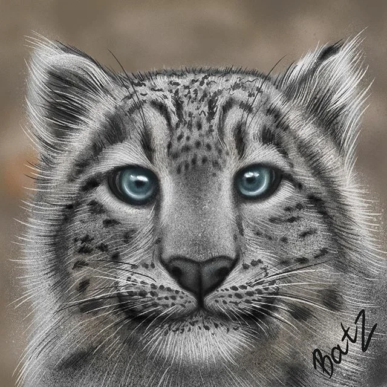

Снежный барс — таинственный хищник Азии.
.jpg)
Снежный барс (ирбис) — таинственный и загадочный зверь — до сих пор остается одним из самых малоизученных видов кошачьих во всем мире. Очень мало известно о биологии и экологии этого редкого хищника, а численность его в пределах современного ареала определена весьма условно. Для многих азиатских народов этот зверь — символ силы, благородства и власти, фольклор Азии полон историй и легенд об этом неуловимом хищнике. Мало кому удается увидеть ирбиса в дикой природе, гораздо чаще можно встретить следы его жизнедеятельности — поскребы, задиры хищника на деревьях, шерсть, экскременты, мочевые точки на камнях.Снежный барс внесен в Красный список Международного союза охраны природы (МСОП) и имеет статус редкого или исчезающего вида во всех 12 странах, где обитает: России, Монголии, Китае, Казахстане, Афганистане, Индии, Кыргызстане, Непале, Пакистане, Таджикистане, Узбекистане, Бутане.
Смотреть на кошечку >>>Снежный барс – одна из наименее изученных диких кошек. Это следствие того, что сегодня ирбис обитает в основном в труднодоступной горной местности. Но немного интересных фактов о них мы все-таки знаем:
1)Снежный леопард – кошка довольно крупная. Ее вес может достигать 50-60 килограмм, что меньше, чем африканский или дальневосточный леопард, но при этом это очень сильное животное, способное охотиться на вдвое превышающую его самого добычу. 2) У ирбиса очень длинный хвост. Вместе в ним общая длина животного достигает 230 см! 3) Эти кошечки невероятно прыгучие. Во время охоты они способны прыгать на 6 метров в длину и на 3 метра в высоту. 4) Живут снежные барсы высоко в горах. Есть зафиксированные случае обнаружения ирбиса на высоте 6000 метров. 5) Снежный барс постоянно кочует. Его территория может достигать 1000 квадратных километров. 6) Продолжительность жизни этих животных 20-25 лет, что выше, чем у большинства других крупных кошек. Видимо, сказывается чистый горный воздух. 7)Снежный барс – кошка одиночка. Объединяются в пары они только на очень короткий брачный период. 8). Самка способна приносить потомство два раза в год. 9) Ирбис, как и большинство других кошек, ведет ночной образ жизни. Однако, при необходимости, он может проявлять активность и в дневное время. Хотя чаще всего днем он спит в своем логове, как правило в небольших пещерах. 10) Как и его родственники леопарды, снежный барс обладает очень хорошим зрением. 11) Благодаря широким лапам ирбис способен передвигаться по снегу, не проваливаясь в него. 12) 23 октября – международный день снежного барса.
Смотреть на кошечку >>>